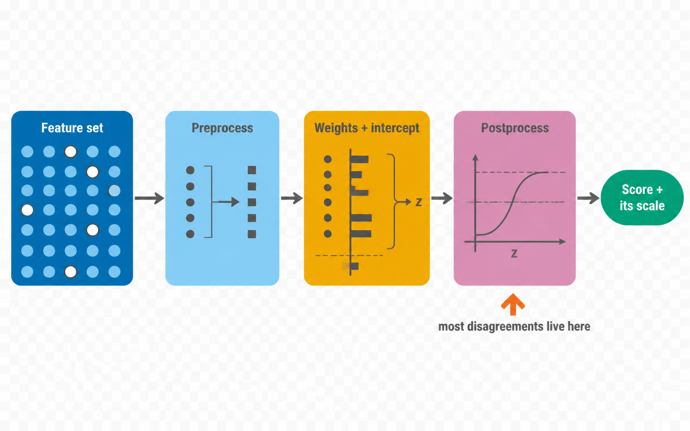
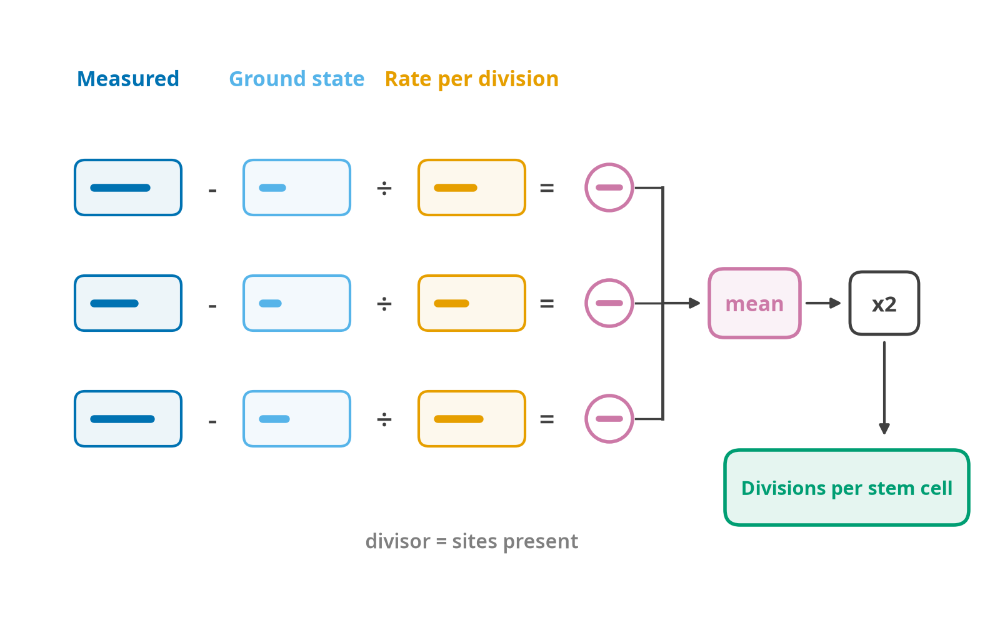

4. Algorithms, the complete operation catalogue

The shape is the field’s, not this package’s: the reviews that survey it describe the same four parts [59] [60].
Every clock in the registry is expressible as select features → preprocess ops → architecture forward → postprocess ops, with ten exceptions that need their own forward pass (§4.3). The ops are the vocabulary; implementing all of them is what makes adding a clock a YAML edit rather than a code change.
The weights are the part everybody agrees on, because they are published. The disagreements between implementations of the same clock are almost all in the last box: whether an anti-log is applied, which of two published transforms was meant, whether an intercept was already folded into the coefficients. That is why the registry stores the postprocess chain as declared data rather than burying it in each model class, and why the clocks whose packaged coefficients contradict their own paper carry the discrepancy as a warning at score time.
v1.0 implements seven of the fifteen preprocess ops below, one dataset-level op and 21 postprocess transforms; 35 of the 69 bundled clocks declare at least one. The rest are not ops here. A bundled clock that needs one does the step in its own model class (AltumAge’s per-feature scaler in
neural.py, the mitotic statistics inaggregation.pyanddivision.py), and the others wait on coefficients that are licensed, not yet traced to a primary source, or absent from the registry. An op with no reachable test vector is an op that is wrong in a way nobody will notice. They are kept here because the vocabulary is the point: when a coefficient set does arrive, adding the clock stays a registry edit.
4.1 Preprocess ops
falconage/models/ops.py, dispatched through PREPROCESS and applied by apply_chain().
They are plain functions of (x, xp, **params), not nn.Module subclasses as originally specified. xp is the array module the device resolver handed back, numpy or torch, so one implementation serves both backends and the CPU path never imports torch. An nn.Module would have forced torch on every install for a 500-CpG dot product that numpy finishes before torch has finished importing. All are batched and vectorised; none contains a Python loop over samples. Source for each is Appendix E.
def apply_chain(x, chain: Sequence[dict], table: dict, *, xp) -> Any:
"""Run an ordered op list from a registry entry. Order is load-bearing:
beta_to_m then scale is not scale then beta_to_m."""Shipped: beta_to_m, m_to_beta, scale, rank_normalize, quantile_normalize, binarize, simplex_projection. The full specified catalogue follows. Under more general names the shipped seven cover identity, scale_median, scale_mean, quantile_normalize_gold, quantile_normalize_scale_gold (as quantile_normalize then scale), binarize_row_median and median_fill_rank. scale_row is not scale, which applies statistics stored with the model; it is the dataset-level op below.
One op runs on the dataset rather than on a clock’s slice: standardise_within_sample, in DATASET_PREPROCESS, which the Zhang et al. 2019 elastic-net and BLUP predictors name in their chains. It needs every probe the data carries, so LinearClock runs it before alignment, from two passes over column blocks that never hold the standardised matrix, and refuses when the data holds less than min_coverage of the 319,607 probes the models were fitted on. The per-sample mean and SD of a subset are not the array’s. It is the scale_row row of the table below, with the row statistics taken over the array as the authors’ pred.R takes them, not over the model’s inputs; formulas §5.4 gives what the narrower scope does to the elastic-net estimate.
| Op | Computation | Stored params | Clocks |
|---|---|---|---|
identity |
x |
- | default |
fill_nan_with_reference |
where(isnan(x), ref, x) |
ref[n_features] |
~90, the LinearReferenceClock family |
scale_median |
(x − median) / std |
median[], std[] |
AltumAge, CpGPTGrimAge3 |
scale_mean |
(x − mean) / std |
mean[], std[] |
CpGPTPCGrimAge3 |
scale_row |
(x − rowmean) / rowstd, guarding zero SD |
- | ZhangEN, ZhangBLUP |
quantile_normalize_gold |
rank map onto sorted gold means, then column subset | gold[20000], idx[] |
DunedinPACE |
quantile_normalize_scale_gold |
as above, then (x − gold_mean)/gold_std, then subset |
gold[], gold_std[], idx[] |
Stubbs |
tpm_log1p |
log1p(1e6 · (1000·x/len) / rowsum), then subset |
lengths[], idx[] |
OcampoATAC1/2 |
binarize_row_median |
mask zeros, threshold at each row’s non-zero median | - | BiTAge |
median_fill_rank |
fill NaN with global median, then per-row average ranks | - | Pasta, PastaMouse, REG |
mean_over_present |
mean of entries != -1 per row |
- | epiTOC1, HypoClock, epiCMIT×2 |
quantile_over_present |
q-quantile of entries != -1 per row |
q=0.95 |
stemTOC, stemTOCvitro |
nan_to_zero |
nan_to_num(x, 0) |
- | epiTOC2, epiTOC3 |
autosomal_zscore |
z-score every probe against that sample’s autosomal mean and SD | autosome_idx[] |
XChrom, YChrom |
expand_with_reference |
scatter the provided features into a wider reference vector | full_ref[], idx[] |
PastaMouse |
Three of these need care.
quantile_normalize_gold. The DunedinPACE gold standard is 20,000 probes, of which only 173 are scored; the other 19,827 exist to define the sample’s rank distribution (the science notes, §4.8). Dropping them produces a plausible wrong number, so the op raises FeatureMismatchError when background coverage falls below a configurable 90%. Vectorised form:
sorted_gold = torch.sort(gold)[0] # [20000]
q_idx = torch.linspace(0, len(sorted_gold) - 1, x.shape[1]).long()
order = torch.argsort(x, dim=1) # [B, F]
out = torch.empty_like(x)
out.scatter_(1, order, sorted_gold[q_idx].expand_as(x))
return out[:, self.scoring_idx]One argsort and one scatter_ per batch, replacing pyaging’s per-row Python loop (pyaging/models/_models.py:255).
median_fill_rank. Average ranks with tie handling. pyaging’s implementation is a nested while loop per row and is the slowest path in that package. The vectorised form uses the double-argsort identity for ordinal ranks and a segment-mean over unique_consecutive for ties:
order = torch.argsort(x, dim=1)
ordinal = torch.empty_like(order)
ordinal.scatter_(1, order, torch.arange(x.shape[1], device=x.device).expand_as(order))
# tie correction: for each run of equal sorted values, replace with the run's mean rankautosomal_zscore. Mean and SD over autosomal probes only, computed per sample with NaN masking, then applied to all probes including the sex chromosomes (the science notes, §3.1).
4.2 Postprocess transforms
falconage/models/ops.py, dispatched through POSTPROCESS. Scalar in, scalar out, applied elementwise over the batch. Constants come from the science notes §4.20 and §5.
| Op | Formula | Params | Clocks |
|---|---|---|---|
identity |
y |
- | most |
anti_log_linear |
y<0: (1+A)eʸ − 1 ; y≥0: (1+A)y + A |
adult_age=20 |
Horvath2013, SkinAndBlood, PedBE, Han, PCHorvath2013, PCSkinAndBlood, IntrinClock, CorticalClock, Pipek×3 |
anti_log_linear_months |
as above with A=48, then /12 |
adult_age=48 |
Wu |
anti_logp2 |
eʸ − 2 |
- | Mammalian1 |
anti_log |
eʸ |
- | MammalianLifespan |
anti_log_log |
e^(−e^(−y)) |
- | Mammalian2 relative-age step |
mortality_to_phenoage |
1 − exp(−exp(y)(e^{120λ}−1)/λ) then 141.50225 + ln(−0.00553·ln(1−m))/0.090165 |
lambda=0.0192 |
PhenoAge |
cox_to_years |
((y−μ_c)/σ_c)·σ_a + μ_a |
four constants | GrimAge, GrimAge2, CpGPTGrimAge3, CpGPTPCGrimAge3 |
petkovich_blood |
((y+1.712)/0.1666)^(1/0.4185) / 30.5 |
- | Petkovich |
stubbs_multitissue |
(exp(0.1207y² + 1.2424y + 2.5440) − 3) · 7/30.5 |
- | Stubbs |
divide |
y / d |
d |
Meer (30.5), Bohlin (7), EPICGA (7) |
sigmoid |
1/(1+e^{−y}) |
- | McCartney ×6, MammalianFemale, CVDWesterman, ADBahadoSingh |
one_minus |
1 − y |
- | HypoClock |
add_constant |
y + c |
c |
REG, Lin (+12.2169841), Ying ×3 |
scale_and_shift |
y·s + o·s |
s, o |
Pasta, PastaMouse |
mortality_to_phenoage clamps the mortality score to [1e-12, 1 − 1e-12] before the logarithm, following mcp-phenoage-clock (mcp-phenoage-clock/src/phenoage.ts), and records clamped: true in the result when it fires, an extreme biomarker combination that saturates the Gompertz CDF is information, not an implementation detail.
Intercept convention. ComputAge and biolearn carry the clock intercept inside the transform lambda; pyaging bakes it into the nn.Linear bias. FALCONAge normalises on import: the intercept always lives in the linear bias, and add_constant is reserved for genuine post-hoc offsets that the source publishes separately. The registry records intercept_source: bias | transform for each imported clock so the normalisation is auditable.
4.3 Model classes
falconage/models/
class FalconClock(nn.Module, ABC):
meta: ClockMeta
features: list[str]
reference_values: Tensor | None
def preprocess(self, x: Tensor) -> Tensor # composed from meta.preprocess
@abstractmethod
def core(self, x: Tensor, ctx: ClockContext) -> Tensor
def postprocess(self, y: Tensor) -> Tensor # composed from meta.postprocess
def forward(self, x: Tensor, ctx: ClockContext) -> TensorClockContext carries what a clock may need beyond its feature matrix, age, sex, species, and the outputs of other clocks it depends on:
@dataclass
class ClockContext:
age: Tensor | None
female: Tensor | None # 1.0 / 0.0; unknown is an error, never 0.5
species: Tensor | None # one-hot for mammalian clocks
upstream: dict[str, Tensor] # e.g. grimage for DNAmFitAgeSex encoding deserves its own note. ComputAge maps unknown sex to 0.5 (ComputAge/computage/models_library/model.py), which silently produces a half-male half-female prediction. FALCONAge raises MissingCovariateError and offers sex_unknown="error" | "impute_from_methylation" | "half", where the middle option runs XChrom/YChrom first and the last must be chosen deliberately.
| Class | Core computation | Clocks | v1.0 |
|---|---|---|---|
LinearClock |
xW + b |
34 bundled | shipped |
ClinicalClock |
PhenoAge / KDM / HD on tabular biomarkers | 3 | shipped |
ScaffoldClock |
refuses, and says where the coefficients come from | the 57 licensed clocks |
shipped |
PCLinearClock |
((x − μ)R)W + b |
PCHorvath2013, PCHannum, PCPhenoAge, PCSkinAndBlood, PCDNAmTL, PCGrimAge | implemented; no weights ship, so build() never reaches it |
MultiStageCoxClock |
sub-linear-models → ordered concat with covariates → Cox layer | GrimAge, GrimAge2, CpGPTGrimAge3, CpGPTPCGrimAge3 | specified |
NeuralClock |
dense layers from a safetensors file | AltumAge | shipped |
AggregationClock |
mean or 95th percentile over the sites present | epiTOC1, stemTOC×2, HypoClock, epiCMIT×2 | shipped |
DivisionClock |
methylation transmission model, averaged over the sites present | epiTOC2, epiTOC3 | shipped |
DeconvolutionClock |
per-sample non-negative least squares on a reference table (projectCellType_CP) → column select |
6-cell IDOL (EPIC, 450K); 12-cell IDOL-Ext with a registered table | shipped |
CompositeClock |
multiple sub-clocks combined by a declared rule | SystemsAge ×12, DNAmFitAge | specified |
SpeciesClock |
split CpG block from species one-hot, species-dependent inverse transform | Mammalian ×9 | specified |
SexScoreClock |
autosomal z-score → sex-chromosome projection | XChrom, YChrom | specified |
ScaffoldClock is the class that is not in the original design and turned out to matter most. Every “specified” row above is needed by a clock family whose coefficients cannot be redistributed, so writing the class first would produce code with no real answer to test against. Instead the registry entry, the feature list, the transform chain and the expected shapes all ship, build() returns a ScaffoldClock, and calling it raises WeightsUnavailableError naming the laboratory to ask, the licence that applies, and the open clocks that answer the same question. A silent skip would leave a results table with a column quietly missing.
4.4 The ten special forward passes
Each gets an explicit implementation and its own gold-standard vector.
1. GrimAge / GrimAge2 (models/cox.py). Ten (v2) or eight (v1) sub-linear-models on disjoint feature index sets, then a fixed concat order, then the Cox layer, then cox_to_years. The order is [GDF15, B2M, CystatinC, TIMP1, ADM, PAI1, Leptin, PACKYRS, (LogCRP, A1C), Age, Female] and is load-bearing, the Cox coefficients are positional (pyaging/models/_models.py:1742). The registry declares the order; a mismatch between declared and stored sub-model count fails validation.
2. PCGrimAge. Centre 78,464 CpGs, rotate to 1,933 PCs, append Female and Age, run eight PC-space sub-clocks, then the Cox layer. requires_fp64: true.
3. CpGPTPCGrimAge3. Scale → split age from the 30 proxies → rotate 30 → 29 PCs → concat → rescale the PC block with a second mean/std pair → linear → cox_to_years. The two-stage scaling is not a mistake in the source; both scalers are stored.
4. DNAmFitAge. Split the batch by sex, run GaitF/GaitM, GripF/GripM and a shared VO2Max, standardise each with the published sex-specific offset and slope, then a sex-specific Klemera–Doubal layer, then recombine in the original row order. The eight constants (the science notes, §4.17) live in the registry, not in code.
5. Mammalian clocks (models/species.py). Input is [CpGs | species_one_hot] with the one-hot width declared per clock (1,756 for clock-2 variants, 1,707 for clock-3). The species index selects gestation time, average maturity age and maximum lifespan from a packaged AnAge table, and the inverse transform is clock-specific:
clock 1: age = exp(ŷ) − 2
clock 2: age = e^(−e^(−ŷ)) · (max_age + gestation) − gestation
clock 3: m̂ = 5 (gestation / maturity)^0.38
ŷ ≥ 0 : age = m̂ (maturity + gestation)(ŷ + 1) − gestation
ŷ < 0 : age = m̂ (maturity + gestation) e^ŷ − gestationA species not in the AnAge table raises rather than falling back to a default.
6. SystemsAge (models/composite.py). Seven steps (the science notes, §4.16): centre and rotate 125,175 CpGs → project onto the system vector → 11 per-system linear modules → a separate PC→age model with a quadratic correction then /12 → concat the 12-vector → optional composite PCA layer → affine calibration ((raw − c₀)/c₁)·c₃ + c₂ → /12. Twelve registry entries share one weight file and differ only in prediction_index (0–10, or −1 for the composite), so the weights are loaded once and cached across the twelve.
7. Deconvolution (models/deconvolution.py). The design was pyaging’s: pseudo-inverse of the signature matrix, then a Euclidean projection onto the probability simplex. What shipped is the authors’ own, projectCellType_CP from FlowSorted.Blood.EPIC with nonnegative = TRUE, lessThanOne = FALSE: per sample, non-negative least squares over the CpGs it observes (scipy.optimize.nnls), rounded to four decimals, with no sum-to-one constraint. The simplex projection is a different estimator, and on real blood it moved every cell type by about 0.006 (methods §4.10 gives the comparison).
table = registry.deconvolution_table(cid, data.platform, present=data.X.columns)
al = align_present(data, list(table.index)) # absent CpGs left out, not filled
props = project(al.matrix, table.to_numpy()) # samples x cell types
return props[:, list(table.columns).index(cell_type)]The six 6-cell entries share one table per array (EPIC, 450K legacy) and differ by deconvolution.cell_type in the registry; the twelve 12-cell entries read a table the user registers under its licence. fa.cell_composition(result) returns every proportion scored in a run as one frame.
8. epiTOC2 / epiTOC3. tnsc = (2/k) Σ_c (β_c − β₀_c) / (δ_c(1 − β₀_c)), with per-CpG δ and β₀ vectors stored as weights and a guard against δ(1−β₀) == 0.

This is not a weighted sum with a different name. Each site is inverted on its own: the drift observed since the ground state is divided by that site’s drift per division, which turns a methylation fraction into a division count. Only then are the per-site estimates averaged, and k is the number of sites actually present rather than the number the clock declares, so a missing site drops out of both the sum and the divisor instead of contributing a zero. The factor of two converts from the per-allele rate to divisions per stem cell.
9. XChrom / YChrom. Autosomal z-score, then Σ (z_sex − mean) · coef over the sex-chromosome probe subset. Exposed both as clocks and through estimate_sex(data) -> DataFrame[x_score, y_score, predicted_sex, confidence], since sex estimation is a preprocessing need as much as a clock.
10. PastaMouse. Expand the mouse feature vector into the full 8,113-gene human space using reference values for human-only genes, then run the shared Pasta forward.
4.5 Clinical chemistry clocks
falconage/models/clinical.py. These are not methylation clocks and do not share the tensor path; they operate on a tabular biomarker frame and are implemented in a way that mirrors BioAge/R/ so the numbers can be checked against it directly.
PhenoAge. Two variants, selected explicitly.
def phenoage(
data: pd.DataFrame,
units: Literal["si", "conventional"], # no default
variant: Literal["levine2018", "liu2019"] = "levine2018",
) -> pd.DataFrame # phenoage, mortality_score, phenoage_advance, clampedThe two coefficient sets and their Gompertz constants are in the science notes §5.1 and are stored in the registry, not in code. units has no default because the SI and conventional parameterisations are not interconvertible by scaling the inputs, the coefficients differ too. The 0.090165 constant is the corrected one; BioAge’s April 2026 commit fixed a widespread 0.09165 and the test suite pins the corrected value.
KDM. Fit-then-project, with the fit reusable:
def fit_kdm(reference: pd.DataFrame, markers: list[str], age_col: str = "age",
s_ba2: float | None = None) -> KDMReference
def kdm(df: pd.DataFrame, ref: KDMReference, age_col: str = "age",
max_missing: int | None = 2) -> pd.SeriesThe math is the science notes §4.4, transcribed from BioAge/R/kdm_calc.R including the details that matter: per-marker regressions on the rows carrying each marker, r_char from the ratio of two weighted sums, s_r from the age range and biomarker count, s_BA² estimated on the reference and kept with the fit, and the rule that a sample with more than two missing biomarkers returns NA rather than a partial score. Fitting by sex is the caller’s choice: fit one reference per sex, as BioAge does. The result reproduces BioAge’s shipped kdm0 to 0.0007 years (§4.4), and kdm_bioage() scores on that scale from a packaged NHANES III fit.
Homeostatic dysregulation. Mahalanobis distance from a young reference cohort:
def hd_fit(reference: pd.DataFrame, biomarkers: list[str]) -> HDFit
def hd(data, biomarkers, fit=None, log=True, by_sex=True) -> pd.DataFramehd_fit standardises the reference by its own mean and SD, then stores the covariance. It checks the condition number and raises when the covariance is near-singular. BioAge only warns on a single-row reference, which is the degenerate case rather than the common one. The reference cohort must be young, non-pregnant and within the clinical windows in the science notes §3.5; the packaged NHANES III fit satisfies this and is the default.
4.6 Op composition and validation
At load time the registry entry’s preprocess and postprocess lists are compiled into an nn.Sequential, and the composition is validated:
- an op requiring stored params must find them in the weight file
quantile_normalize_goldmust be followed by a column subset- a clock with
scale_type: age_yearsmay not carrysigmoidas its final transform - the declared
n_featuresmust match the weight tensor’s leading dimension
These checks run in registry/validate.py in CI and again at load time, so a malformed registry entry fails before it produces a number.
4.7 Scaffold-only clocks
Forty clocks are licensed (tier C): their architecture is described in a published paper and is implemented here in full, but their coefficients are not ours to distribute. For these FALCONAge ships the scaffold and nothing else - the model class, the feature list, the preprocess and postprocess chain, the shape and dtype of every expected tensor, and a loader that accepts a coefficient file the user supplies.
Everything about these clocks except the numbers is written from scratch, and all of it is testable. What cannot be done is invent the numbers.
Which they are, and why
| Family | n | Why permission is needed |
|---|---|---|
| GrimAge, GrimAge2 and its 10 sub-clocks, CpGPTGrimAge3, CpGPTPCGrimAge3 | 14 | Coefficients were never published in the papers. UCLA licenses the clock; what circulates in other packages has no traceable primary source. |
| SystemsAge and its 11 system variants | 12 | Flagged research-use-only by the authors. Coefficients are on a lab Google Drive, published in Nature Aging 2025 but not under a redistribution licence. |
| PCGrimAge | 1 | A principal-component reparameterisation of GrimAge; inherits its restriction. |
| DunedinPACE | 1 | Research-use-only. Distributed through the authors’ R package under terms the user accepts on install. |
The GrimAge family is the sharp case. GrimAge2 is the most-used mortality clock in the field, and its coefficient set has no public primary source at all, pyaging re-hosts a copy whose origin its own audit could not establish. FALCONAge will not launder that. The scaffold is complete and correct; the numbers must come from UCLA or from the user’s own licensed copy.
What ships
# registry/clocks/grimage2.yaml (excerpt)
availability: C
coefficient_source:
tier: T5
url: null
primary_source_traced: false
licence: "Research use only. Commercial licensing via UCLA TDG."
obtain: >
GrimAge2 coefficients are not publicly redistributable. Request access from
the Horvath laboratory, or use the authors' online calculator at
dnamage.clockfoundation.org. Once you hold a coefficient file, register it
with falconage.registry.register_local_weights("grimage2", path).
contact: "https://dnamage.clockfoundation.org"
scaffold:
complete: true
expects:
- {name: "sub_models", shape: "10 x (n_features_i,)", dtype: float64}
- {name: "cox", shape: "(12,)", dtype: float64}
validated_against: "published worked example, Lu 2022 Table 2"Supplying coefficients
import falconage as fa
fa.registry.register_local_weights(
"grimage2",
"~/licensed/grimage2_coefficients.csv",
)
res = fa.score(data, clocks=["grimage2"])register_local_weights("grimage2", "~/licensed/grimage2_coefficients.csv")
res <- score(data, clocks = "grimage2")register_local_weights parses the file, checks it against the scaffold’s declared shapes and feature count, warns on any feature the scaffold does not expect, converts to safetensors, and caches it. A file that does not match the published architecture is rejected with the mismatch named, which also makes this the mechanism for validating a coefficient set someone hands you.
The registration is recorded in the run manifest as weights_source: user_supplied, sha256: ..., so a result computed from a licensed copy is distinguishable from one computed from a redistributed set.
Behaviour without coefficients
Scoring a licensed clock with nothing registered raises rather than silently skipping:
WeightsUnavailableError: grimage2 is a scaffold-only clock.
Its architecture is implemented and tested, but its coefficients are
not distributed with FALCONAge.
Why: Research use only; coefficients were never published in the paper and the copies
circulating in other packages have no traceable primary source.
Obtain them from: https://dnamage.clockfoundation.org (Horvath laboratory); commercial
licensing via UCLA TDG
Then: falconage.registry.load().register_local_weights('grimage2', <path>)
The question it answers: Who is at risk of dying sooner, or is frailer?
Bundled clocks that answer it too:
dnamphenoage dna methylation 513 features, bundled
hrsinchphenoage dna methylation 959 features, bundled
zhangmortality dna methylation 10 features, bundled
hd clinical chemistry markers chosen by the user, bundled
kdm clinical chemistry markers chosen by the user, bundled
phenoage clinical chemistry 10 features, bundledNaming the open alternatives matters. A user who wanted a mortality clock and hit a wall should leave with one that works, not with an error. The list is derived, not kept by hand: it is every bundled clock that falconage.registry.questions routes to the same question as the licensed one, the same routing the choosing a clock page uses. A hand-kept list offered Horvath and Hannum, both fitted to chronological age, in place of GrimAge. Where no bundled clock answers the question, as for SystemsAge, the message says so. The registry’s coefficient_source.alternatives follow as “Related entries”, each with its availability, so a sibling that is itself licensed is never presented as something to run instead.
clocks="compatible" excludes unregistered licensed clocks by default and reports the exclusion. clocks="all" includes them and fails loudly. falconage clocks list --tier licensed shows the whole set with its obtain instructions.
Testing a clock whose weights you do not have
The scaffold is still fully tested, three ways:
- Synthetic weights. Generate a coefficient set of the right shape; run it, and assert the forward pass produces the algebraically expected value. This tests the architecture, the sub-model ordering, the concat order, the Cox transform constants, without needing the real numbers. A GrimAge2 scaffold given a coefficient vector of all zeros except one must return the value that hand-computation says it should.
- Published worked examples. Several papers report a reference sample’s inputs and its resulting age. Where one exists it is the gold-standard vector, and it is a better oracle than another package’s output because it comes from the authors.
- Shape and invariant contracts. Feature count, dtype, sub-model count, concat order, output range and scale type are all asserted from the registry entry regardless of which weights are loaded.
A licensed clock without a published worked example carries gold_standard.source: "synthetic weights, architecture only" and the docs say so on its page. It is honest about being an untested-against-truth implementation of a correctly-described architecture.
Could they be reimplemented from scratch instead?
For the architecture, yes, and that is what §4.4 already specifies, the GrimAge two-stage structure, the PC rotation and SystemsAge’s seven-step pass are all described well enough in their papers to write independently, and are written here.
For the coefficients, no. They are the output of an elastic net fit to cohorts that are not public. Framingham, the Women’s Health Initiative, the Dunedin Study. Refitting the same architecture on different data produces a different clock that must not carry the same name. That path is real and is scoped as a v1.5 milestone (§13), where a FALCONAge-native mortality clock trained on the open ComputAgeBench split would be a new contribution rather than a substitute.